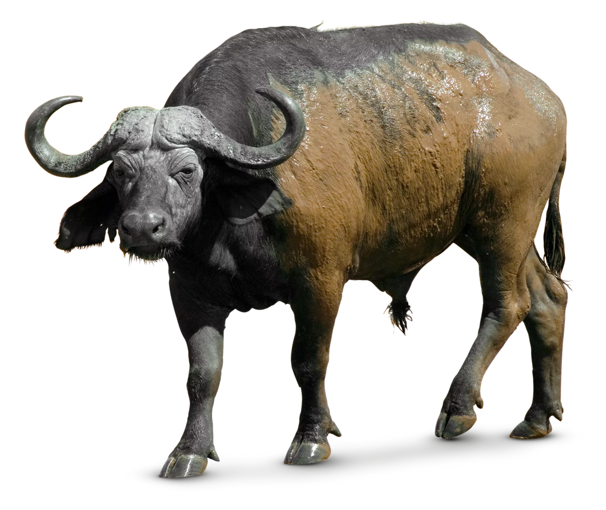
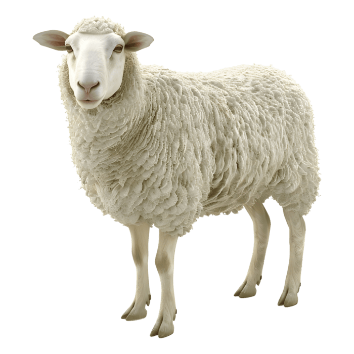
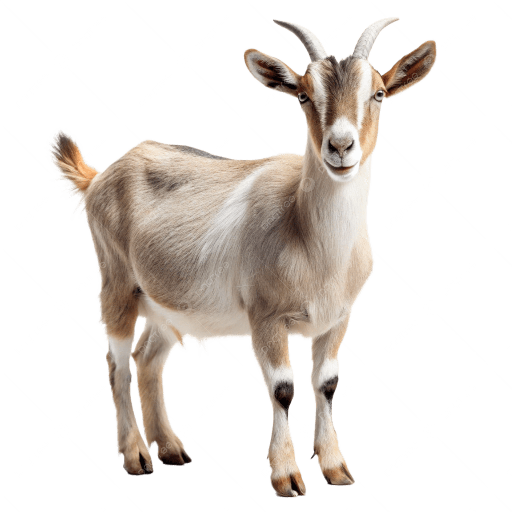

Domestic Animals



Buffalo are iconic creatures of both the American West and the
African savanna. Although the term “buffalo” is widely used,
it actually refers to three distinct species: the African buffalo
(Syncerus caffer), the water buffalo
(Bubalus bubalis and the American bison (Bison bison),
which is not a true buffalo.
Sheep, scientifically classified as Ovis aries,
are domesticated ruminant mammals that have been
integral to human survival and culture for millennia.
Domesticated goats are descended from the pasang
(Capra aegagrus), which is probably native to Asia,
the earliest records being Persian. In China,
Great Britain, Europe, and North America, the domestic goat
is primarily a milk producer, with a large portion
of the milk being used to make cheese.